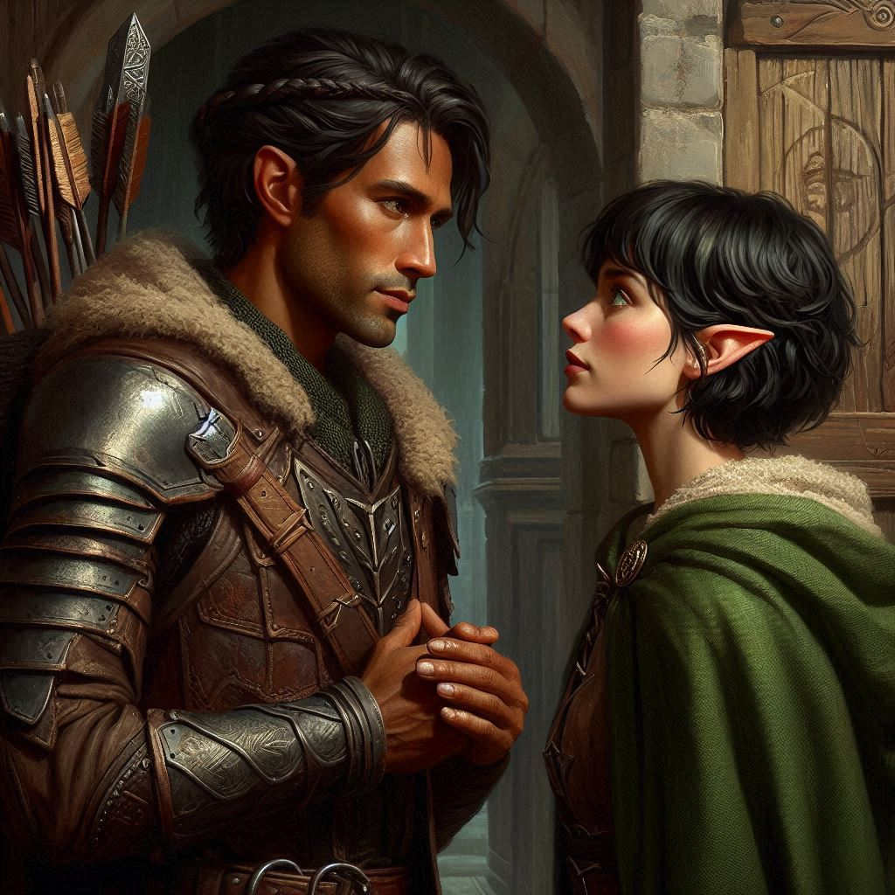
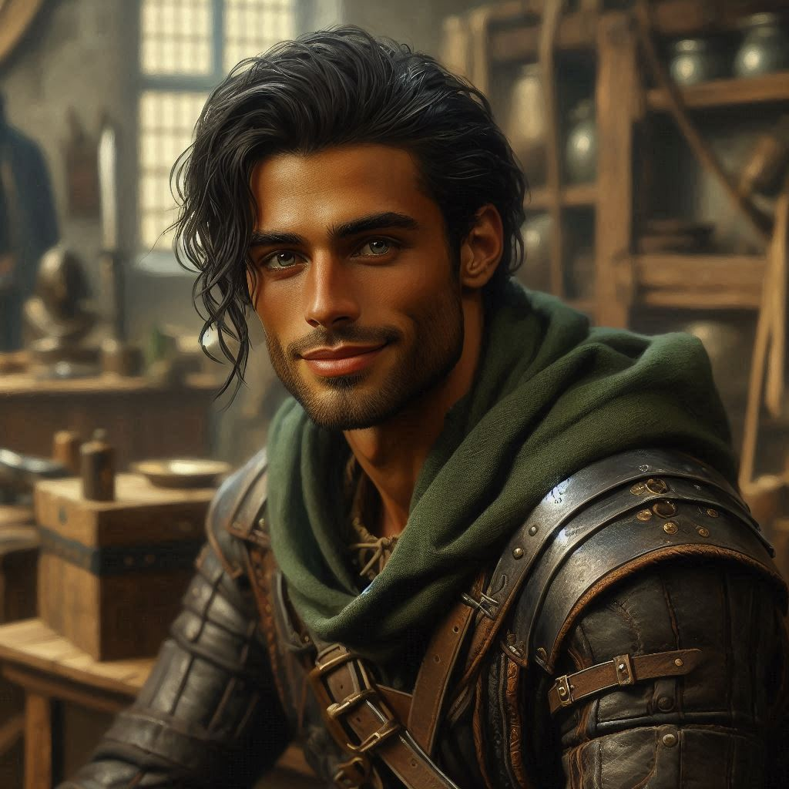

The Rangers' Guild House
You stand outside the small ranger outpost, the cool evening breeze tugging at your cloak as the last rays of sunlight disappear behind the mountains. The weight of the mission presses down on you with every step. Inside, Elias is waiting—your closest friend, though lately the distance between you feels more like an unspoken barrier.
You push open the door, and there he is, sitting by the fire, sharpening his blade. His face, illuminated by the flickering flames, looks hard, focused—almost detached. When he looks up, you can see the worry in his eyes. He knows why you're here.
"So, it’s true then,” Elias says softly, not looking up from his work. “You’re going after Jorsh.”
You hesitate before answering. “The Magistrate gave me the order. I don’t have a choice.”
Elias sets down his sword, the scrape of metal on stone echoing in the room. He rises, slowly, and steps toward you, his expression shifting between concern and frustration. “You do have a choice. You don’t have to go after him alone.”
You shake your head. “This is my responsibility, Elias. The Magistrate trusts me to bring Jorsh in, and I won’t fail.”
“Kira,” Elias says, his voice more forceful now. “This isn’t just a mission. Jorsh isn’t just another rogue sorcerer. He’s—”
“—someone I used to know,” you finish quietly. Your heart clenches at the thought of Jorsh, the boy you once laughed with, dreamed with, who disappeared into the dark arts. But Elias doesn’t know the whole truth. He doesn’t know how complicated this is for you.
Elias steps closer, close enough that you can feel the heat from his body, and his voice drops to a pained whisper. “You’ve never talked about him. Not to me, anyway. But there are whisperings that you and he… have some kind of history…”
You swallow hard and look away. “It’s… complicated,” you say, feeling like a stupid school girl in love. You clear your throat. “It doesn’t matter anymore. I have to do what’s right. If he’s gone too far, I’ll stop him.”
For a moment, the room is silent, save for the crackle of the fire. You can feel Elias’s eyes on you, searching for something—anything—that might make him understand.
Then, suddenly, he speaks, his voice cracking with emotion. “I love you, Kira.”
The words hit you like a punch to the gut. You blink, startled, your heart racing as you process what he’s just said. Love? Elias… loves you?
“I’ve loved you for a long time,” Elias continues, stepping even closer, his eyes locked onto yours. “And I know this isn’t the right moment, but I can’t let you go after Jorsh without telling you. I can’t stand by and watch you walk into danger, not knowing if I’ll ever see you again.”
Your breath catches in your throat. Elias has always been there for you—steady, reliable, someone you’ve always counted on. But love? You hadn’t let yourself think of him that way. How could you, when the memory of Jorsh, your childhood infatuation, has haunted you all these years?
“I…” You struggle to find the words, but nothing seems right. Your mind is spinning with conflicting emotions—feelings you’ve buried for so long, now surfacing all at once. But you can’t afford to let those feelings control you. Not now. Not with so much at stake.
“I care about you,” you say softly, your voice shaking. “But I have to see this through. Jorsh… I have to know what happened to him. If he’s truly lost, I’ll stop him. But if there’s any chance I can save him, I need to try.”
Elias’s jaw tightens, and you can see the pain in his eyes. “And what if you can’t save him, Kira? What if you lose yourself trying?”
You don’t have an answer. You’ve asked yourself that same question countless times since receiving the mandate, but the answer eludes you.
Taking a deep breath, Elias looks away for a moment, as if wrestling with his thoughts. Then he turns back to you, his gaze sharp and determined. “There’s something else you need to know. The Minister of Trade—he’s been acting strange lately. There are rumors. Dark magic, shadowy figures coming to visit him at night. I think he’s connected to Jorsh’s plans.”
Your brow furrows. “The Minister of Trade? What could he possibly have to do with Jorsh?”
“I don’t know,” Elias admits, “but if you want to understand what Jorsh is really after, you need to investigate him. You need to know what you're up against.”
You nod slowly. It makes sense. If the Minister of Trade is involved, this could be bigger than just Jorsh. Investigating him might give you the clues you need. But there’s still one more decision to make.
Elias steps forward again, his eyes searching yours. “Let me come with you, Kira. You don’t have to do this alone. We can confront the Minister together, figure out what’s going on.”
You hesitate, feeling torn. Elias has always been by your side, but this mission… it’s different. It’s personal. You need clarity, not distractions. But the thought of leaving him behind, after everything he’s confessed, feels like a betrayal.
Elias, sensing your hesitation, offers another solution. “Or, if you don’t want me by your side, send me ahead. Let me scout out Hemlock Caverns while you deal with the Minister. That way, if things go south with Jorsh, at least we’ll have a backup plan.”
He waits, his eyes filled with a mixture of hope and fear. The choice lies with you now.